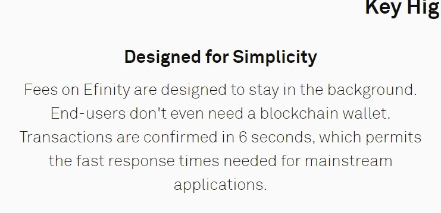

本篇施工中
Enjin正在下一盤非常大的棋。
和Swarm相比，Enjin的合作夥伴是真的背景深厚，而且是真的有實質技術交流並且正在做產品的。這大概不用我再多贅述，太多新聞網站在寫這類內容了。
一樣，我來寫些冷門內容。
要開始寫Enjin的內容前，大概還是無法繞過ERC721和ERC1155。
ERC標準
ERC721
應該所有人都有聽過ERC20，都知道他是「代幣標準」的意思，符合其標準可以方便在區塊鏈上互相交換。
聽到ERC20，在聽到ERC721，感覺好像ERC721很新嗎？不，ERC721其實早在2017/01年被提出，提出的人是Flow區塊鏈的首席架構工程師 Dieter Shirley。
ERC1155
ERC1155則是在2018/06被提出，該標準在2019已經被當作正式標準，不過目前還是OPEN的狀態，不用太擔心，不會因為有改動而造成安全性的影響。
提出的人是Enjin CTO Witek Radomski，也是ERC1155的第一作者(他在Author排序第一，不過我不確定EIP系列有沒有在分作者順序)。
我們用網路遊戲來比喻，我能想到最紅的網路遊戲大概是楓之谷。
- ERC20：相當於遊戲裡的楓幣，就是打怪物會掉的虛擬幣。每一個楓幣都是一樣的，無論我是從怪物身上打出來，或者賣裝備給商店老闆拿到的都會是一模一樣的。
- ERC721：相當於遊戲裡的裝備、防具，因為每件裝備都是獨一無二的，有可能打怪掉寶的時候數值就不太一樣。或者它可能被強化過。所以一樣是楓葉劍，可能會有+7神裝，也可能會有+0廢物。
- ERC1155：有時候，我們又需要一個資產類別是可以大量堆疊、卻又不是ERC20的東西，於是ERC1155出現了。你可以理解為遊戲裡的紅藥水，紅藥水每一罐都完全相同，可以堆疊一兩百個。交易的時候可以將它整捆賣給商店老闆。
同時，我們還可以給ERC1155設定一些有趣的特質。例如，設定喝紅藥水(補血量)有固定的冷卻時間，要等待一段時間才能再喝一瓶。並且，同時和藍藥水(補魔力)的冷卻時間共用。這在ERC20上要實現就會相當複雜。
至此，一個區塊鏈遊戲的所有特質都齊備了。有趣的是，Flow目前發行的「卡牌收藏」，的確只需要ERC721就能實現了。而Witek Radomski想做的「區塊鏈遊戲」勢必需要ERC1155的出現。也難怪後續ERC1155的作者群中並沒有Dapper Lab和Flow一掛的工程師。
這幾個代幣並不代表更新進步的象徵，不會有ERC1155比ERC20厲害的情況。只是功能取向的不同。
這部分其實有點可惜，我才剛把ERC20的程式碼實際寫過一遍並使用過。ERC1155和721還沒有實際試過，否則我應該能介紹的更漂亮一些。
Enjin和Efinity到底有何差別?
這是我一開始最為困惑的問題。
Enjin是以太坊上的ERC20代幣，但是很明顯的是，以太坊太常塞車了。若是將遊戲建構在以太坊上，
Enjin現在有哪些項目
https://enjinx.io/eth/marketplace-rankings
這是目前Enj的交易市場，這一頁是目前有在開始可以交易的項目
流動量最大的Lost Relic是一個劍與魔法的RPG，類似暗黑破壞神
第二名是一個可愛的養成遊戲
第三名很詭異
第四名是Banksy，之前畫被燒掉的藝術家
第五名也很詭異，有點像是遊戲開發工具(?
Efinity特色功能
根據官網描述，Efinity幾乎不會需要和使用者互動，甚至不用區塊鏈錢包。

如果你使用過任何Defi錢包，應該有過使用時常常需要看確認授權啊、設定Gas費用等等非常麻煩的問題，想像你正在玩遊戲，突然跳出一堆英文問題要你回答，那會是相當糟糕的體驗。這裡Efinity預計會在背景幫使用者搞定一切，這個黑科技可以參考AMIS(台灣區塊鏈的審計公司)
Enijin上有哪些遊戲
https://enjin.io/about/powered-by-enjin
其他競爭對手
sandbox2021宣傳片
母公司Animoca Brands為香港遊戲公司，在2018年，Animoca Brands留意到區塊鏈技術及數碼資產擁有權的潛力，因此收購The Sandbox開發商Pixowl。
Animoca Brands不只有SandBox，還另外有了F1和MotoGP的版權。目前已經發售了MotoGP Ignite的NFT卡包(我又沒搶到!!)，還有Revv代幣(ERC20)。
另外還有WWE手機遊戲版權，但不一定會是區塊鏈遊戲。
- 像素風格的遊戲很吃個人口味
- 玩家可以自創3D建模並賣出(以NFT創作器VoxEdit自行創作虛擬資產)
參考資料
【The Sandbox專訪】虛擬土地價格年內累升10倍 平台如何佈局虛擬經濟體系？
統計資料
https://playtoearn.net/blockchaingames
https://dappradar.com/
https://artouch.com/tag/nft